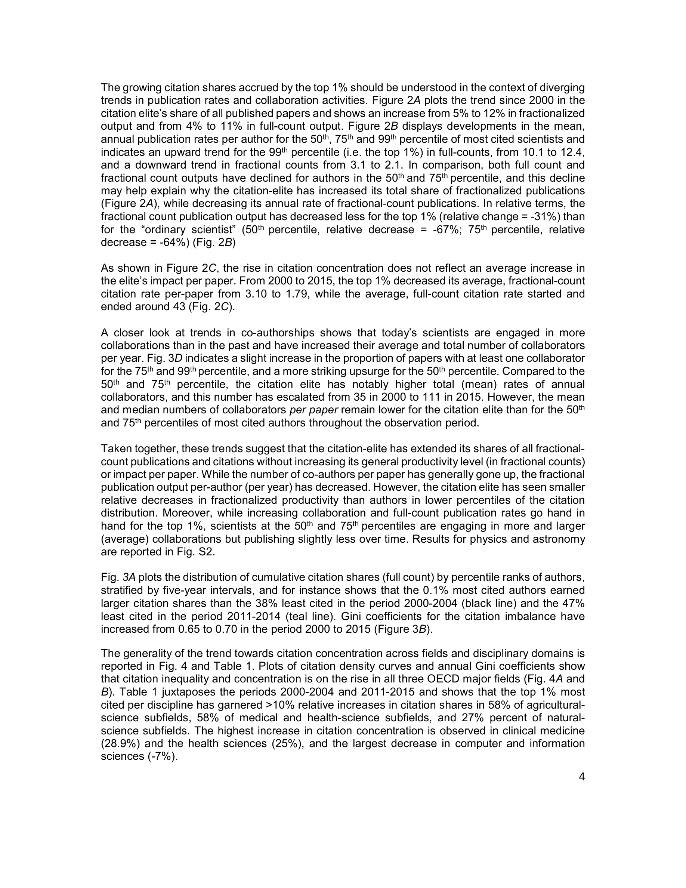
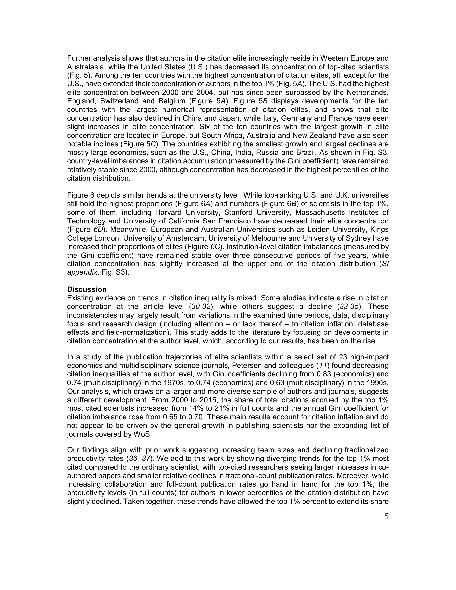

Figure 1
저자: Mathias Wullum Nielsen, Jens Peter Andersen | 날짜: 2021 | Journal: PNAS | DOI: 10.1073/pnas.2012208118
Figure 1
상위 1% 피인용 과학자의 누적 인용 점유율이 2000년 14%에서 2015년 21%로 증가하였고, 인용 불균형의 지니계수가 0.65에서 0.70으로 상승하여, 글로벌 과학 시스템에서 저자 수준의 인용 불평등이 심화되고 있음을 400만 명 이상의 저자와 2,600만 편의 논문 분석으로 실증하였다.

Figure 2
과학은 고도로 계층화된 사회 시스템으로, 매튜 효과(Matthew effect)에 의해 소수 엘리트 과학자에게 자원이 집중되는 현상이 잘 알려져 있다. 기존 연구에서 인용 집중도의 시간적 추이에 대한 증거는 혼재되어 있었는데, 일부는 논문 수준에서 집중도 증가를, 다른 연구는 감소를 보고하였다. 이러한 불일치는 분석 시기, 데이터, 분야, 연구 설계의 차이에서 비롯된 것으로, 특히 저자 수준에서의 인용 집중도 추이는 저자 식별(disambiguation) 기술의 한계로 충분히 연구되지 못했다. 저자 식별 알고리즘의 발전으로 글로벌 규모의 저자 수준 분석이 가능해짐에 따라, 118개 학문 분야에 걸친 15년간의 인용 집중도 추이를 체계적으로 조사하였다.

Figure 3

Figure 4

Figure 5
총평: 400만 저자 규모의 글로벌 데이터셋을 활용하여 인용 불평등의 심화를 실증적으로 입증한 중요한 연구로, 인용 인플레이션 보정과 full/fractional count 이중 분석, 국가/기관 수준 분해 등 방법론적으로 견고하며, 과학 정책과 연구 평가 시스템의 재설계에 대한 근거를 제공한다.